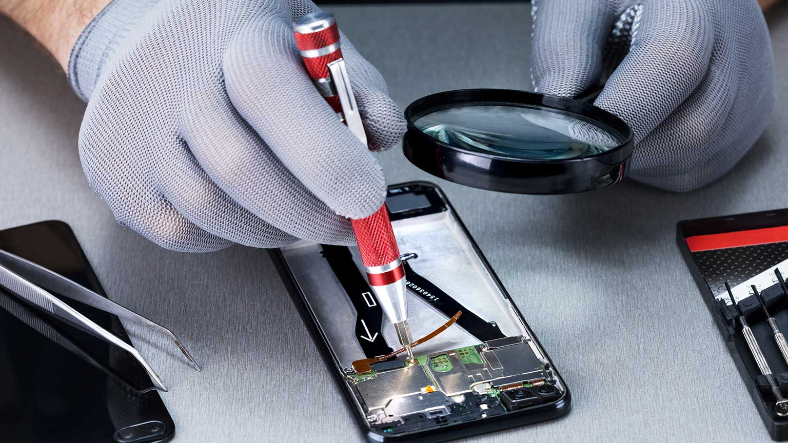
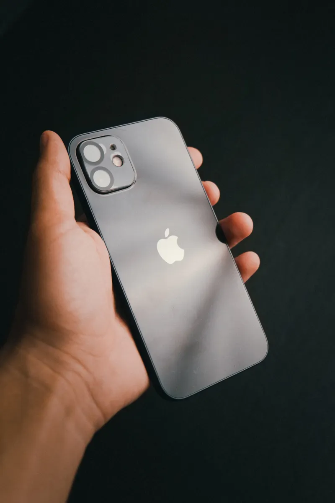
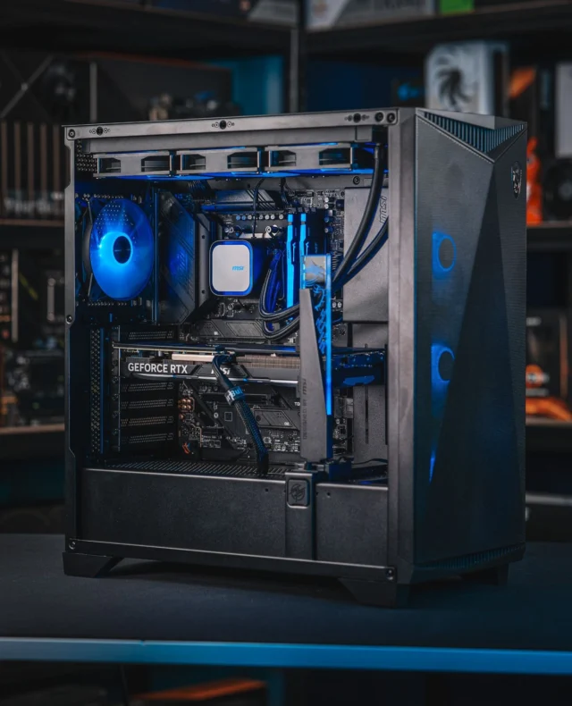

Tin ra mắt & rò rỉ mới nhất
iPhone, Samsung, Xiaomi, NVIDIA, Intel, AMD — tổng hợp ở mục Tin HOT.
Chia sẻ tin hot, mẹo hay và kinh nghiệm sửa chữa cho điện thoại, laptop và PC. Mỗi mục có ô tìm kiếm riêng — gõ đúng từ khóa trong mục đó là ra bài, không lẫn sang mục khác.
Thử gõ:

Rò rỉ, ra mắt mới và đợt sale đáng chú ý — bấm vào để xem chi tiết từng mục.
iPhone, Samsung, Xiaomi, NVIDIA, Intel, AMD — tổng hợp ở mục Tin HOT.
Top 5 điện thoại, Top 5 laptop sinh viên, Top 5 PC gaming.
Săn sale đúng món, tránh mua hớ với checklist kiểm tra giá.
Bài mẫu để bạn hình dung cách trình bày — thay bằng bài của bạn khi đăng lên GitHub.
Mỗi mục có tìm kiếm riêng, lọc riêng.

Tin mới, so sánh, mẹo iPhone/Android, sửa chữa theo triệu chứng và Phần mềm điện thoại.
Học tập, văn phòng, gaming, đồ họa. Có mục Lỗi thường gặp và Phần mềm laptop riêng.

Build 10–30 triệu, linh kiện, benchmark, lỗi PC và Phần mềm PC (OBS, Steam, driver).
Tra mã kính cường lực dùng chung cho từng máy — khỏi mua nhầm, dán thử là vừa.
Tin nóng 24h · Rò rỉ / tin đồn · Sự kiện & sale · Bảng xếp hạng tháng
Tin mới · Đánh giá · So sánh · Mẹo · Sửa chữa · Theo hãng · Phần mềm · Mua bán — lọc theo hãng (Apple, Samsung, Xiaomi, Nokia…) để tìm đúng bài của đúng máy
Thêm, đổi tên hoặc xóa mục con (thư mục con) bên trong mục Điện thoại. Bài thuộc mục con bị xóa sẽ chuyển sang mục con đầu tiên còn lại.
Bấm vào một hãng để xem riêng các bài Sửa chữa của hãng đó:
Hoặc tìm theo triệu chứng:
Mỗi bài sửa có ảnh từng bước, phần “tự làm tại nhà hay mang ra tiệm”, rủi ro và cách check máy sau khi sửa.
Theo nhu cầu · Theo hãng · Đánh giá & so sánh · Mẹo dùng · Lỗi thường gặp (sửa chữa) · Phần mềm — lọc theo hãng (Dell, HP, Lenovo, Asus, MacBook…) để tìm đúng bài của đúng máy
Thêm, đổi tên hoặc xóa mục con (thư mục con) bên trong mục Laptop. Bài thuộc mục con bị xóa sẽ chuyển sang mục con đầu tiên còn lại.
Bấm vào một hãng để xem riêng các bài Lỗi thường gặp của hãng đó (chai pin, quạt kêu, không lên nguồn…):
Ngay trong mục Laptop này: Windows / macOS, Office & PDF, phần mềm đồ họa / cắt video, diệt virus và sao lưu dữ liệu. Dùng ô tìm phía trên, gõ tên phần mềm là ra.
Build theo ngân sách · Linh kiện · Đánh giá & benchmark · Mẹo · Lỗi PC · Phần mềm
Thêm, đổi tên hoặc xóa mục con (thư mục con) bên trong mục PC. Bài thuộc mục con bị xóa sẽ chuyển sang mục con đầu tiên còn lại.
Ngay trong mục PC này: cài Windows, driver card đồ họa, Steam / Discord / tăng FPS, OBS & Premiere cho livestream, dọn rác và chống virus.
Tai nghe · Chuột · Bàn phím · Loa · Màn hình · Tablet · Đồng hồ thông minh · Hỏi đáp
Tra xem kính cường lực của máy nào dùng chung được cho máy nào — khỏi mua nhầm. Gõ tên máy là biết lấy hộp kính nào. Dữ liệu gốc từ bảng tra KingKong Full của Camera Ba Đồn, đã đưa về web này và bổ sung thêm các máy mới ra mắt.
Nguồn: bảng dùng chung KingKong Full, đối chiếu 2 bảng mã cũ và bảng iPhone của cửa hàng Camera Ba Đồn — xem trang gốc. Các mã mới bổ sung do Mẹo Tech tra cứu thêm, ghi rõ “dán thử” khi chưa xác nhận. Máy có chấm đỏ là máy có hộp KingKong in tên riêng.
Ảnh bạn up lên GitHub, chia theo Điện thoại / Laptop / PC / Sửa chữa. Mỗi ảnh có tiêu đề, tag và link tới bài gốc.
Chỉ mình bạn up ảnh là đủ — không cần nút upload cho người xem.
Điền bài vào form rồi bấm Đăng bài ngay — nhớ chọn đúng Hãng của máy để bài được chia theo hãng — bài hiện ngay trên web, ở đúng mục bạn chọn, bấm “Đọc bài” xem được luôn và ô tìm kiếm của mục đó cũng tìm thấy. Bài mới được lưu trong trình duyệt này; muốn mọi người cùng thấy, xuống mục 💾 Dữ liệu & đưa lên GitHub bên dưới, tải file data.json rồi up lên GitHub. Web cũng tạo sẵn file .md của từng bài để bạn lưu trữ riêng nếu muốn.
✅ Đã đăng xong! Bài đang lưu trong trình duyệt này — nhớ tải file data.json ở mục 💾 bên dưới và up lên GitHub để mọi người cùng thấy. Đây là file .md của bài, để bạn lưu trữ riêng:
⚠️ Quan trọng: mọi thay đổi của Admin (thêm / sửa / xóa bài viết, thêm / sửa / xóa mục con) hiện chỉ lưu trong trình duyệt này — người xem khác chưa thấy được. Muốn mọi người cùng thấy: bấm Tải file dữ liệu ở dưới, rồi up file data.json lên GitHub vào thư mục assets/ (ghi đè file cũ). Sau khi up xong, ai mở web cũng thấy bản mới.
Lưu ý: web tĩnh không có máy chủ nên khóa Admin ở đây chỉ để ẩn phần chỉnh sửa khỏi người xem thường trên trình duyệt của bạn, không phải bảo mật cấp máy chủ. “Khóa” thật cho việc phát hành nội dung là tài khoản GitHub của bạn — chỉ bạn mới up được file lên repo. Mật khẩu Admin do bạn tự tạo ở lần đăng nhập đầu tiên trên mỗi trình duyệt, file web không chứa mật khẩu mặc định nào.
Đổi mật khẩu cho trình duyệt này. Máy hay trình duyệt khác thì bạn tự đặt mật khẩu ở lần đăng nhập đầu tiên trên máy đó.
images → chọn thư mục con đúng mục, ví dụ images/sua-chua/Đặt tên ảnh không dấu, dễ tìm: iphone-hao-pin.jpg, build-pc-15tr.jpg. Nén dưới 1–2MB để web load nhanh.
meo-tech/ ├─ index.html ├─ images/ │ ├─ dien-thoai/ │ ├─ laptop/ │ ├─ pc/ │ ├─ sua-chua/ │ └─ phu-kien/ └─ bai-viet/ ├─ dien-thoai/ ├─ laptop/ └─ pc/
# Tiêu đề rõ vấn đề — ví dụ: iPhone hao pin nhanh: 7 cách kiểm tra tại nhà **Mục:** Điện thoại > Sửa chữa **Hãng:** Apple (chọn đúng hãng khi đăng để người xem lọc theo hãng trong mục Sửa chữa là thấy ngay) **Tag:** iphone, pin, sua-chua, hao-pin ## Vấn đề 2–3 câu: máy gặp gì, ai hay bị. ## Cách làm từng bước (kèm ảnh) 1. ... 2. ...  ## Lưu ý Khi nào không nên tự làm, nên mang ra tiệm. ## Kết luận Nên làm gì tiếp theo.
meo-techindex.html, thư mục assets/ (trong đó có file data.json chứa bài viết & mục con) và thư mục images/ lên repomain / (root) → Saveten-cua-ban.github.io/meo-tech/